선생님 화면 1차시 따라 하기
학생 기록을 학급 서버에 모으는 선생님 수업 화면을 1차시 순서대로 따라 해 봅니다.
NET ZERO ECO-CITY와 화석 수사대는 같은 화면을 씁니다. 프로그램마다 다른 점은 마지막에 모아 두었습니다.
2026. 11. 15. 공개판 기준 · 그림은 모두 가상 학생 28명이 들어 있는 예시 수업 화면입니다.
자료 주소: https://scienceisjo.github.io/ai-science-it/class-guide.html
미리 둘러보기
예시 수업은 버튼을 눌러도 실제 서버에 아무것도 저장하지 않습니다. 아래 순서를 예시 수업에서 먼저 눌러 보신 뒤 교실에서는 선생님 노트북 한 대와 학생 기기 두세 대로 실제 방을 열어 확인해 주세요.
실제 수업에서 여는 선생님 화면: NET ZERO 선생님 화면 · 화석 수사대 선생님 화면
1. 수업 열기
- 선생님 화면에서 「새 방 만들기」를 채웁니다.
수업 이름(예: 1학년 3반)과 방 비밀번호(6자 이상)를 적고 「만들기」를 누릅니다. 학급 하나에 방 하나를 씁니다. 비밀번호는 다시 볼 수 없으니 따로 적어 두세요.
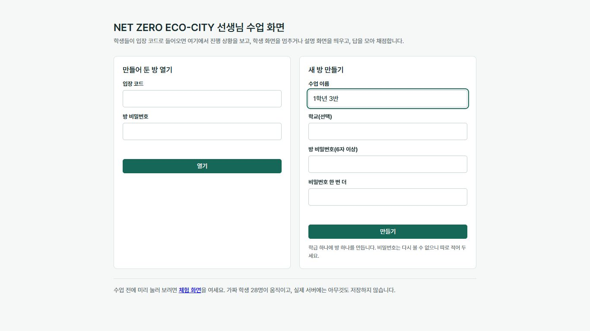
처음 화면 · 다음 시간에는 왼쪽 「만들어 둔 방 열기」에 입장 코드와 비밀번호를 넣습니다. - 위쪽에 뜬 입장 코드를 확인합니다.
방을 만들면 화면 위쪽에 영문·숫자 여섯 자리 입장 코드가 뜹니다. 「학생 링크 복사」를 누르면 코드가 들어간 학생용 주소가 복사됩니다.
2. 학생 입장
- 학생에게 학생 링크나 입장 코드를 알려 줍니다.
학생 링크로 들어오면 「수업 참여」 창에 입장 코드가 미리 들어가 있습니다. 학생은 학번과 이름만 적고 「들어가기」를 누릅니다. 한글 자판으로 코드를 쳐도 영문으로 바로잡힙니다.
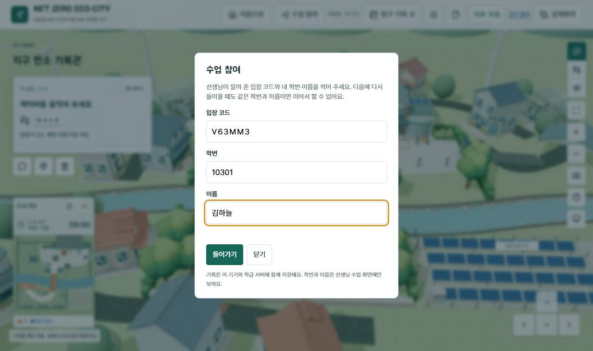
학생 화면 · 수업 참여 창 - 다른 기기에서도 이어서 할 수 있습니다.
같은 학번·이름으로 다시 들어오면 학급 서버에 저장된 기록을 이어서 엽니다. 기기를 바꾸거나 새로 고침해도 됩니다.
- 「열린 차시」에서 1만 켜 둡니다.
학생은 열린 차시에만 들어갑니다. 1차시 수업이면 위쪽 「열린 차시」의 1만 진하게 켜져 있는지 확인해 주세요.
- 입장한 학생은 「시작하기」와 「다음 장소로」만 누르면 됩니다.
입장하면 그 차시의 질문과 움직이는 법이 한 화면에 뜹니다. 「시작하기」를 누르면 캐릭터가 첫 탐구 장소로 걸어갑니다. 탐구 화면에서는 「기록하고 다음 탐구로」가 기본 버튼이라 지도를 거치지 않고 다음 단계가 열리고, 차시의 마지막 단계를 마치면 지도로 돌아옵니다. 중간에 지도로 나가려면 「기록하고 맵으로」를 누르고, 지도에서는 왼쪽 임무 칸의 「다음 장소로」로 다음 시설까지 갑니다. 교사 자료·자료 모음·설계회의·화면 저장처럼 수업에 쓰지 않는 버튼은 입장한 학생 화면에서 숨겨 둡니다. 화석 수사대도 같은 방식이고, 버튼 이름은 「기록 보존하고 다음 활동으로」와 「보존하고 현장으로」입니다. 3D 지도가 열리지 않는 기기에는 「탐구 화면 열기」 버튼이 뜹니다.
- 학생은 지도의 단계 시설에 들어가 탐구합니다.
NET ZERO는 시설마다 노동규 선생님 「심플 데이터 탐구」의 그 단계 화면이 뜹니다. 데이터 ①을 읽고 「근거로 저장」을 눌러야 다음 단계가 열리고, 저장한 근거는 DATA PASSPORT에 쌓입니다. 학생 기록이 비교집단이면 AI 코치 질문 대신 활동 안내가 보입니다.
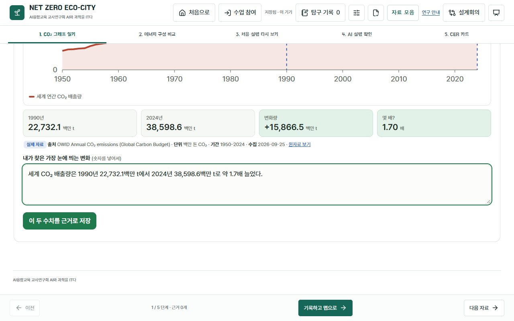
학생 탐구 화면 · NET ZERO 1차시 1단계 「CO₂ 그래프 읽기」
3. 수업 화면 읽기
학생이 들어오면 「수업 화면」 탭에 학생마다 칸이 하나씩 생깁니다. 3초마다 새로 고쳐집니다.
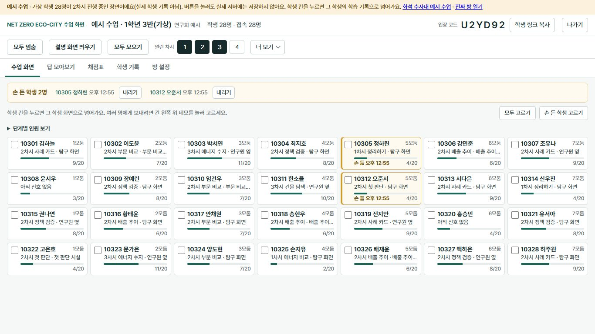
- 학생 칸에는 지금 위치와 진행이 보입니다.
- 첫 줄: 학번·이름, 모둠
- 둘째 줄: 지금 있는 차시·단계와 장소(탐구 화면, 지도 위 등)
- 막대와 숫자: 기록이 채워진 단계 수
- 노란 칸 「손 듦」, 회색 칸 「연결 끊김」, 「같은 단계 10분」 같은 표시
- 손 든 학생은 칸 위 한 줄에 모입니다.
이름을 누르면 그 학생 화면으로 가고, 「내리기」를 누르면 손이 내려갑니다.
- 단계별 인원은 접어 두었습니다.
「단계별 인원 보기」를 펼치면 차시·단계마다 몇 명이 있는지 표로 보입니다. 숫자를 누르면 그 학생들이 한꺼번에 골라집니다.
4. 수업 조작
- 모두 멈춤
학생 화면에 「잠깐 멈춤 · 선생님을 봐 주세요」가 덮입니다. 다시 누르면(「멈춤 풀기」) 풀립니다. 쓰던 글은 지워지지 않습니다.
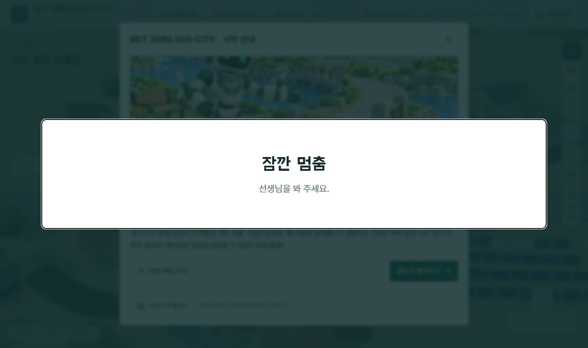
학생 화면 · 모두 멈춤 - 설명 화면 띄우기
「학습하기 쪽」, 「선생님 슬라이드」, 「알림 글」 가운데 하나를 골라 학생 화면에 띄웁니다. 띄운 동안 위쪽 초록 줄에서 쪽을 넘기거나 「화면 닫기」를 누릅니다.
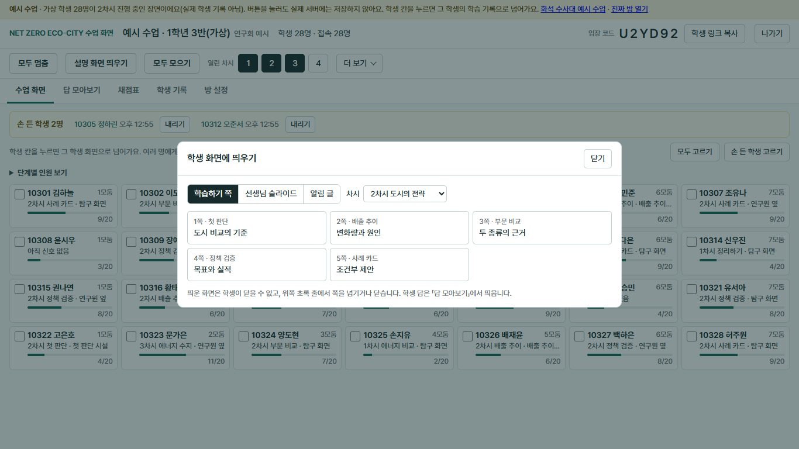
학생 화면에 띄우기 창 - 모두 모으기
차시와 장소를 고르면 모든 학생 캐릭터가 그 자리로 옮겨집니다. 탐구 화면을 보던 학생은 쓰던 글을 저장한 뒤 지도로 돌아옵니다.
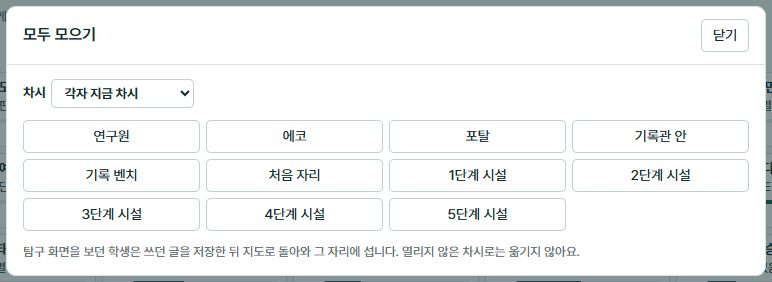
모두 모으기 창(NET ZERO) - 몇 명에게만 보낼 때는 칸 왼쪽 위 네모로 고릅니다.
네모를 누르면 화면 아래에 「고른 학생」 줄이 뜹니다. 여기서 고른 학생만 옮기기(순간이동), 탐구 단계 열기, 힌트·칭찬 카드 보내기, 시점 맞추기를 합니다. 「모두 고르기」로 전체를 골라 같은 일을 할 수도 있습니다.
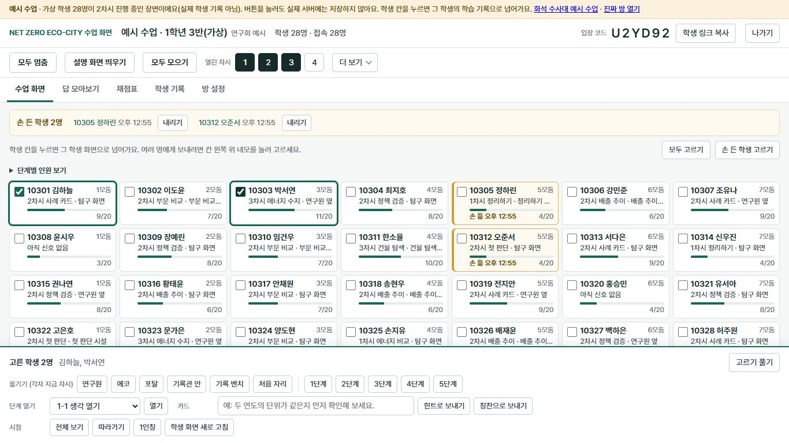
두 명을 고른 모습 · 칸 자체를 누르면 고르기가 아니라 그 학생 화면으로 넘어갑니다. - 「더 보기」에는 자주 쓰지 않는 설정이 있습니다.
- 이동 잠금: 학생이 지도에서 움직이지 못하게 합니다.
- 친구 캐릭터: 같은 차시 지도에 있는 반 친구 캐릭터가 2초쯤 늦게 따라 움직입니다. 머리 위 이름표를 이름·학번으로 고르거나 끕니다. 탐구 화면에 들어간 친구는 흐리게 「탐구 중」으로 보입니다.
- 타이머(5·10·15분), 공지(학생 화면 위쪽 한 줄), 이름 가리기(이 화면을 학생 앞에 비출 때)
켜 둔 설정은 「더 보기」를 닫아도 옆에 작게 표시됩니다.
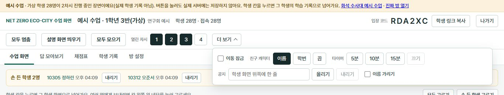
더 보기를 펼친 모습
5. 학생 한 명 보기
- 학생 칸을 누르면 그 학생 화면으로 넘어갑니다.
위쪽 「← 목록으로」나 브라우저의 뒤로 가기로 돌아옵니다. 주소에 학생이 표시되므로 새로 고침해도 그 학생 화면이 유지됩니다. 「이전 학생」, 「다음 학생」으로 차례로 넘겨 볼 수 있습니다.
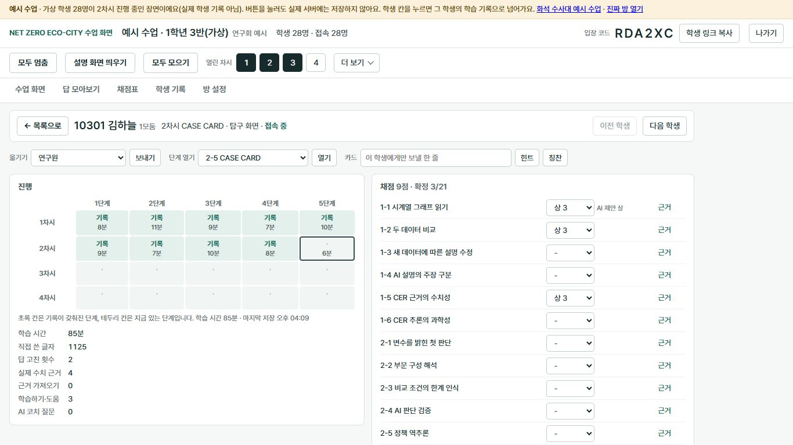
학생 화면 위쪽 · 지금 위치와 접속 여부, 이 학생에게만 보내기, 진행, 채점 - 이 학생에게만 옮기기·단계 열기·카드를 보냅니다.
이름 아래 줄에서 장소를 골라 「보내기」, 단계를 골라 「열기」, 한 줄을 적어 「힌트」나 「칭찬」을 누릅니다.
- 아래로 내리면 차시·단계 순서로 학생 답이 모두 보입니다.
처음 답과 지금 답이 다르면 처음 답을 함께 보여 주고, 고친 기록은 「고친 기록」을 눌러 펼칩니다. 쓰지 않은 칸은 흐리게 「쓰지 않음」으로 보입니다.
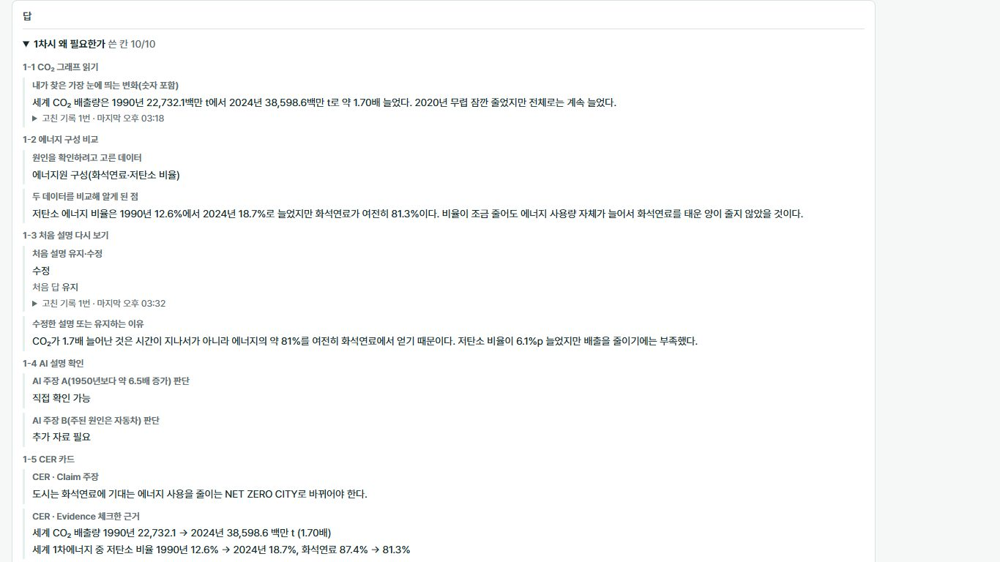
학생 화면 아래쪽 · 답과 고친 기록
6. 답 모아보기
- 왼쪽에서 질문을 고르면 반 전체의 답이 모입니다.
「쓴 학생」, 「빈칸」으로 걸러 볼 수 있습니다. 학생이 가져온 자료 덩어리는 빼고 학생이 직접 쓴 글만 보여 줍니다.
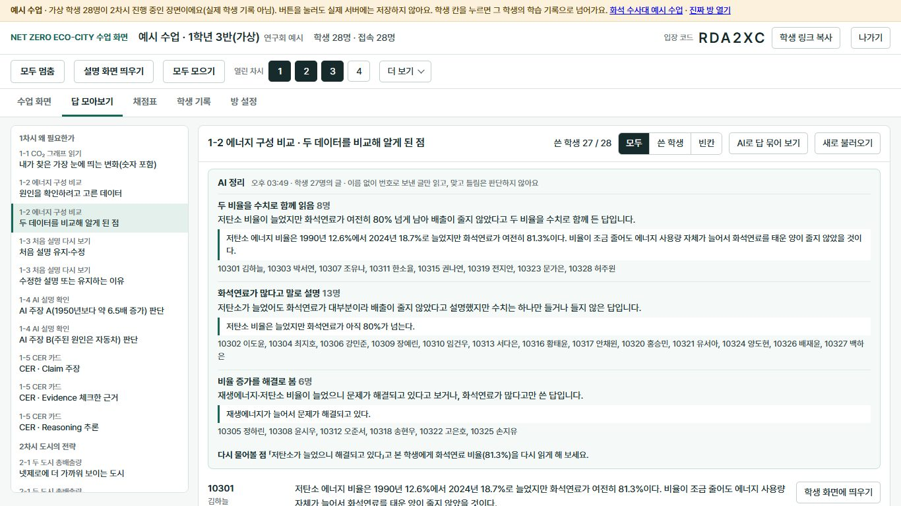
답 모아보기 · NET ZERO 1-2 질문 - 좋은 답은 이름을 가리고 학생 화면에 띄웁니다.
답 옆 「학생 화면에 띄우기」를 누르면 이름 없이 학생 화면에 나옵니다.
- 「AI로 답 묶어 보기」는 키를 등록하면 연결됩니다.
학생이 직접 쓴 글만 이름 없이 번호로 보내 비슷한 생각끼리 묶습니다. 맞고 틀림은 판정하지 않습니다. 지금은 「AI 기능은 아직 준비 중이에요」가 뜨고, 예시 수업에서는 체험용 결과가 나옵니다.
7. 채점
- 채점표에서 칸을 고르면 바로 저장됩니다.
학생마다 요소별 단계를 고르면 합계가 바로 바뀝니다. 학생 이름을 누르면 그 학생 화면으로 갑니다.
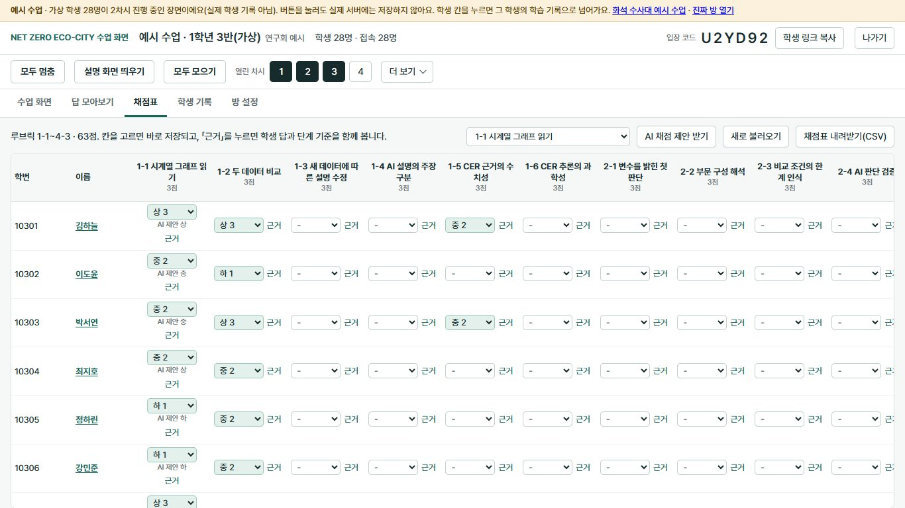
채점표(NET ZERO) · 상 3 · 중 2 · 하 1 · 무응답 0 · 미확인 - 「근거」를 누르면 학생 답과 단계 기준을 나란히 보며 채점합니다.
그 학생 화면 맨 위에 채점 칸이 열립니다. 왼쪽은 이 요소의 근거가 되는 학생 답, 오른쪽은 단계 기준과 선생님 메모입니다. 「저장하고 다음 학생」을 누르면 다음 학생의 같은 요소로 넘어갑니다.
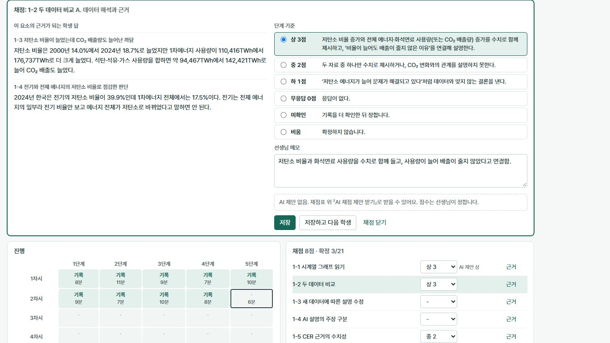
학생 화면의 채점 칸 - 「AI 채점 제안 받기」도 키를 등록하면 연결됩니다.
AI 제안은 칸 아래 「AI 제안」으로만 보이고, 선생님이 고른 단계는 바뀌지 않습니다. 점수는 선생님이 정합니다.
- 「채점표 내려받기(CSV)」로 엑셀에서 엽니다.
8. 수업을 마칠 때
- 「학생 기록」 탭에서 학생별 진행과 반 전체 흐름을 봅니다.
「학생별 표」는 학생마다 진행·학습 시간·채점 확정 수를 한 줄로 보여 주고, 줄을 누르면 그 학생 화면으로 갑니다. 「반 전체 지표」에는 단계별 기록, 처음 생각을 바꾼 학생, 선택형 답의 분포, 채점 분포가 있습니다. 연구회와 나눌 때는 가명(S01, S02…)으로 내보내 주세요.
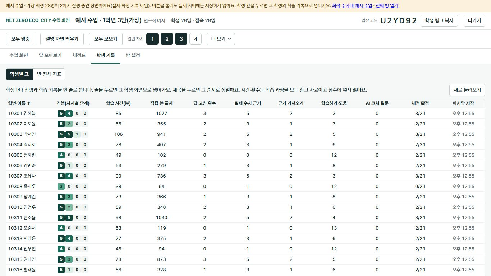
학생 기록 · 학생별 표 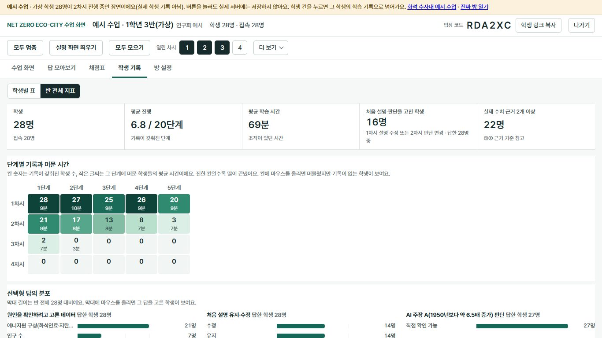
학생 기록 · 반 전체 지표 - 「방 설정」에서 입장과 기록을 정리합니다.
- 새 학생 입장 막기: 이미 들어온 학생은 같은 학번·이름으로 계속 들어올 수 있습니다.
- 기록 확정: 학생이 더 고치지 못하게 합니다.
- 모둠 번호 정하기, 시험으로 들어온 학생 지우기
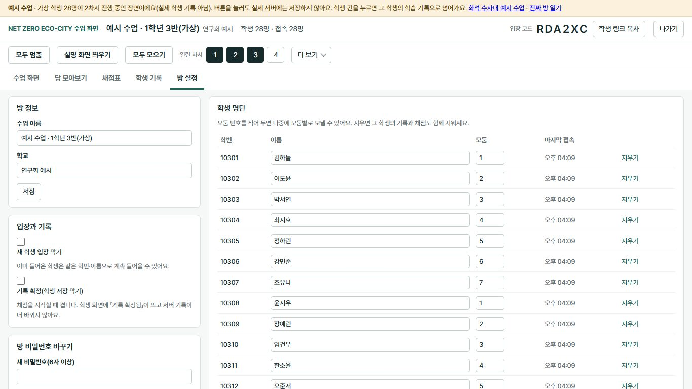
방 설정 - 「나가기」는 이 기기에서 선생님 화면만 닫습니다.
학생 기록은 계속 저장됩니다. 다음 시간에는 입장 코드와 방 비밀번호로 다시 엽니다.
프로그램별 1차시 차이
| NET ZERO ECO-CITY | 화석 수사대 | |
|---|---|---|
| 1차시 이름 | 왜 필요한가 | 다섯 번의 침묵 |
| 탐구 단계 | 5단계: CO₂ 그래프 읽기 · 에너지 구성 비교 · 처음 설명 다시 보기 · AI 설명 확인 · CER 카드(노동규 선생님 「심플 데이터 탐구」 화면) | 4단계: 침묵의 구간 찾기 · 원인 가설 회의 · 증거 심사 · 조사 결과 보고 |
| 옮길 수 있는 곳 | 연구원 · 에코 · 포탈 · 기록관 안 · 기록 벤치 · 처음 자리 · 단계 시설 | ECHO · 시간 관문 · 처음 자리 · 단계 앞 |
| 채점 기준 | 노동규 선생님 3단계 루브릭 원문(상 3 · 중 2 · 하 1 · 무응답 0). 1차시는 1-1~1-6, 4차시는 연구회 초안을 이 탐구의 4차시 활동에 맞춰 옮긴 3요소. 모두 21요소 63점 | 모은 선생님 루브릭 P1~P8(A~E 다섯 단계, 50점). 1차시 기록은 P1(그래프 해석), P2(가설·증거 검토)에 쓰입니다. |
| 설명 화면 | 학습하기 쪽 · 선생님 슬라이드 · 알림 글 | 선생님 슬라이드 · 알림 글 |
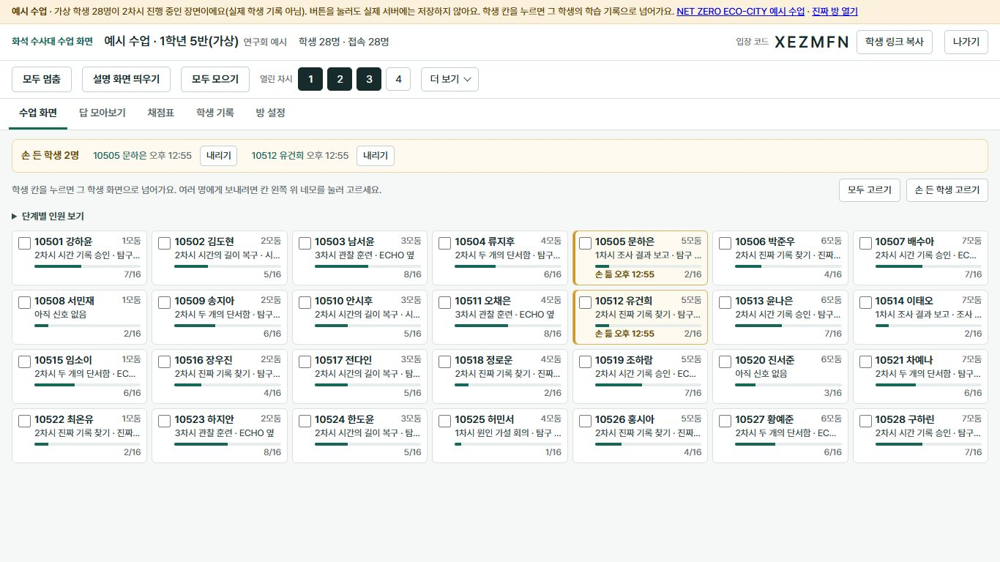
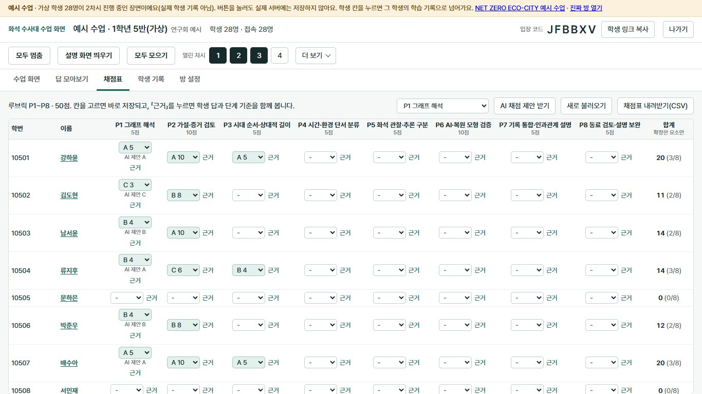
안 될 때
- 학생이 차시에 못 들어가면 「열린 차시」에서 그 차시 번호가 켜져 있는지 봅니다.
- 학생 칸이 회색 「연결 끊김」이면 학생 기기의 인터넷 연결을 확인합니다. 다시 연결되면 저장해 둔 기록부터 올라갑니다.
- 학생이 이름을 잘못 적었으면 「방 설정」 명단에서 고치거나 지우고 다시 들어오게 합니다.
- 선생님 화면을 실수로 닫았으면 같은 주소에서 입장 코드와 방 비밀번호로 다시 엽니다. 그사이 학생 화면은 닫히지 않고 기록도 계속 저장됩니다.
- 시험해 볼 때 적어 둘 것: 몇 번째 순서였는지, 학생 기기 종류(크롬북·태블릿·휴대폰), 화면에 뜬 문구